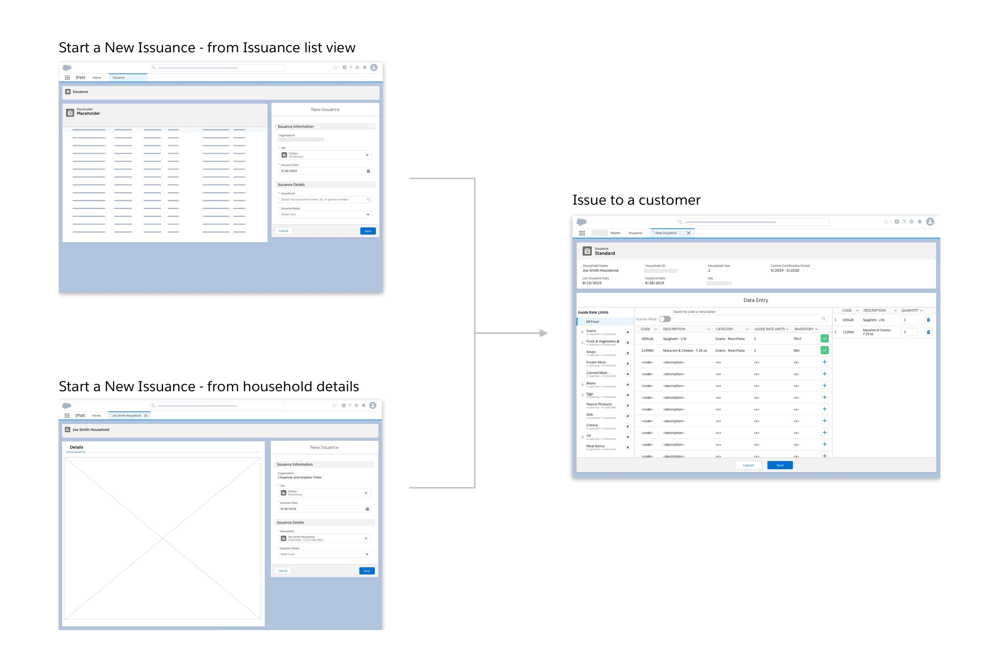
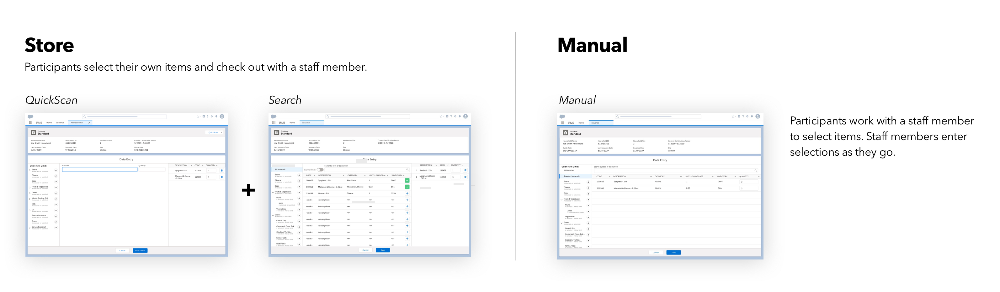

<!DOCTYPE html>
<html>

<head>
	<title>Emily Porat | Grocery POS System</title>
	<link rel="stylesheet" type="text/css" href="styles/global.css">
	<link rel="stylesheet" type="text/css" href="styles/global-mobile.css">
	<link rel="stylesheet" type="text/css" href="styles/nav.css">
	<script src="https://ajax.googleapis.com/ajax/libs/jquery/1.9.1/jquery.min.js"></script>
	<link rel="shortcut icon" type="image/x-icon" href="pics/favicon.ico" />
	<link rel="stylesheet" href="https://cdnjs.cloudflare.com/ajax/libs/font-awesome/4.7.0/css/font-awesome.min.css">
	<!-- Global site tag (gtag.js) - Google Analytics -->
	<script async src="https://www.googletagmanager.com/gtag/js?id=UA-119412150-1"></script>
	<script>
		window.dataLayer = window.dataLayer || [];
		function gtag(){dataLayer.push(arguments);}
		gtag('js', new Date());

		gtag('config', 'UA-119412150-1');

      // load other reused files
      $(function() {
      	$('#nav').load('http://emilyporat.com/nav.html');
      	$('#footer').load('http://emilyporat.com/footer.html');
      });
  </script>
</head>

</html>
<body class="preload">
	<meta name="viewport" content="width=device-width">
	<div id="nav"></div>
	<div id="arrow-up" onclick="slideUp()"><i class="fa fa-angle-up"></i></div>	

	<div class="title-wrapper animate-reveal animate-first">
		<div class="title">
			<div class="header">Grocery POS</div>
			<div class="last"><div class="divider"></div></div>
			<div class="subheader-2">Fall 2019 - Spring 2020 • Deloitte Digital</div>
		</div>
	</div>

	

	<div class="panel context">
		<div class="context-summary">
			<div class="subheader-2">Context</div>
			<p>
				This project was focused on supporting a food distribution program run by a large government agency. Through this program, eligible participants can pick up supplemental food from grocery-style warehouses or pop-up events. The team was tasked with replacing the legacy inventory management system with a cloud-based web application built on the Salesforce platform and an accompanying iOS mobile app.
			</p>
			<p>
				The beauty of Salesforce is its plug-and-play nature. Sophisticated applications can be built quickly by using the wide range of 'out of the box' components. However, this particular system has many complex requirements, and custom interfaces were required in three major areas: customer data management, inventory management, and point of sale (POS) checkout system.
			</p>
			<p>
				My focus was centered around the checkout process and interface.
			</p>
			<p>
				<i>Please note: some data fields and details are omitted due to restrictions surrounding government contracting.</i>
			</p>
		</div>

		<div class="context-specifics">
			<div class="subheader-2">Team</div>
			<div class="context-description">I was one of two designers on a large team of 25+ practitioners.</div>
			<div class="subheader-2">Skills</div> 
			<div class="context-description">User Research, Journey Mapping, Wireframing, Prototyping, Visual Design, Information Architecture, User Flows</div>
			<div class="subheader-2">Tools</div><div class="context-description">Sketch, InVision, Abstract, PowerPoint</div>
		</div>
	</div>

	<div class="panel gray">
		<div class="subheader-3 left">Table of Contents</div>
			<div class="body right">
				<ul class="toc_list">
 					<li><a href="#process">Process</a></li>
 					<li><a href="#research">Research Insights</a></li>
 					<li><a href="#web-ia">Web IA</a></li>
 					<li><a href="#web-design">Web Design</a></li>
 						<ul>
 							<li><a href="#web-design-data-entry">Data Entry</a></li>
 							<li><a href="#web-design-nav-tree">Navigation & Limits</a></li>
 							<li><a href="#web-design-errors">Errors</a></li>
 						</ul>
 					<li><a href="#mobile-ia">Mobile IA</a></li>
 					<li><a href="#mobile-design">Mobile Design</a></li>
 				</ul>
			</div>
	</div>

	<div class="panel" id="process">
		<div class="subheader-3 left">Process</div>
			<div class="body right">
				I joined this project 4 months after it started. By that point, 1/3 of the web system has been designed and developed. In an ideal world, the team would have conducted thorough exploratory user research before beginning design and have been periodically conducting usability testing throughout. In this situation, however, the team had trouble getting client buy-in for direct user contact, so field visits were pushed back several times and demos were substituted for usability testing.
				<p></p>
				<b class="subheader-4">Discover</b>
				<div class="subheader-2">Week 1-2</div>
				<div style="margin-bottom: 5%">My design lead went on 3 field visits to conduct contextual inquiry and answer our highest-priority questions.</div>
				
				<b class="subheader-4">Define</b>
				<div class="subheader-2">Week 3-4 & Throughout</div>
				<div style="margin-bottom: 5%">I analyzed my design lead's field notes and built several deliverables, including a research report, executive summary, and journey map. Broader product requirements had already been defined through the Statement of Work, and more granular definition continued as we fleshed out the requirements for each system component.</div>
				
				<b class="subheader-4">Design, Develop, Demo, Repeat</b>
				<div class="subheader-2">Every 3 weeks for 9 months</div>
				<div style="margin-bottom: 5%">Our project was broken into 3-week sprints, which were segmented into 3-sprint 'Program Increments' (PIs). About halfway through, we moved from Web design to Mobile. Typically, each sprint looked something like this:
					<li>Review user stories for requirements - ask clarifying questions</li>
					<li>Build low-fi wires for internal design review</li>
					<li>Review low-fi wires with dev & functional for feedback</li>
					<li>Update & review low-fi wires with client for feedback</li>
					<li>Mid-sprint demo for current dev sprint</li>
					<li>Build hi-fi visual comps for internal design review</li>
					<li>Review hi-fi wires with dev, functional, and sometimes project leadership for feedback</li>
					<li>Update & review hi-fi wires with client for feedback</li>
					<li>Formal signoff & final tweaks</li>
				</div>
				Two things to keep in mind: this was a 1.0 product, so we often designed and built entire flows in just a few weeks. Plus, the team was brand-new and had never worked together before. So, our design sprints rarely went 100% according to plan - the above outline is the best-case scenario, but I was often juggling several other tasks as well as moving through that process. Regardless, our process was highly iterative and fast-paced.
			</div>
	</div>

	<div class="panel" id="research">
		<div class="subheader-3 left">Research Insights</div>

		<div class="body right">
		Because research took place 4 months late, its purpose shifted from open-ended exploration to confirmation: validating the assumptions we'd already acted on and tweaking requirements that had already been defined. Not an ideal situation - but better late than never!
		<p>We didn't have time to spend weeks processing interview data, synthesizing it with an affinity diagram, and defining a product vision. We were already building primary features! Instead, I took 2 weeks to sift through all the notes, build out a wiki-style report with quotes and pictures, and condense that report into a PowerPoint presentation for the client. Below are some of the most important insights we confirmed and learned about the shopping experience.</p>
		
		<div class="subheader-2">Flexibility</div>
			Participating organizations use two different methods for checkout: manual and store concept. At manual locations, program staff step through each food category and enter the units selected manually. In the grocery store model, a customer shops in a warehouse, following an approved grocery list, and a staff member checks them out using a barcode scanner
		</div>

		<div class="body right" style="margin-top: 5%">
		<div class="subheader-2">Efficiency</div>
			Regardless of the  method, checkout is a high pressure situation - staff members are trying to get through each customer's order as quickly as possible
		</div>

		<div class="body right" style="margin-top: 5%">
		<div class="subheader-2">Attention deficit & physical space</div>
			Users have to constantly shift their focus between the physical shopping cart, customer, screen, barcode scanner, etc. Additionally, some stores don't have much, if any counter space, which makes using the mouse very undesirable.
		</div>

		<div class="body right" style="margin-top: 5%">
		<div class="subheader-2">User error</div>
			It's easy to make mistakes in this rapid-fire environment. Users may encounter several possible errors - some people would rather avoid them, while some prefer to cause them and get feedback. The current system uses audio cues (buzz/beep) to indicate errors when checking out.
		</div>

		<div class="body right" style="margin-top: 5%">
		<div class="subheader-2">Tech literacy</div>
			This is an enterprise application - our users have different levels of computer proficiency. They are used to a function key based navigation legacy system; moving to point & click alone will be jarring.
		</div>

		<div class="body right" style="margin-top: 5%">
		<div class="subheader-2">Connectivity</div>
			Some organizations have unreliable internet access and some have none at all. A primary purpose of the mobile app is to support those groups with an offline mode. This capability brings a host of technical challenges surrounding data syncing and validity.
		</div>

		<div class="body right" style="margin-top: 5%">
			To supplement the executive summary, I also built out journey maps for the key processes. Here's the map for the shopping experience:
		</div>
	</div>

	<div class="panel dark">
		
	</div>

	<div class="panel" id="web-ia">
		<div class="subheader-3 left">Web Information Architecture</div>
		<div class="body right">
			By the time I joined the team, the top-level IA had already been defined. The structure of Salesforce also introduced some navigation and organization constraints. My primary role with the Web IA was to document, analyze, and work with the team to ensure it made as much sense as possible given the technical constraints. I built out documentation covering the platform considerations, a comparison of the legacy vs new systems, a deep dive of the new IA, and a summary of improvements and challenges.
			
			
			<p>These were some of the primary improvements:</p>
			
			<div class="subheader-4">Navigation & Search</div> 
				<div>The legacy system only supports keyboard navigation, so users need to either recall how they had navigated to a certain page or continue to hit the return or exit options to see how the pages are related. There is only one path to most pages, and no global or local search capabilities.</div>
				
				<p>In the new system, global navigation is provided through the app launcher, and users can always see local app-level navigation via tabs. All pages provide links to contextually related content, global search is provided, and both keyboard and point & click navigation is supported.</p>
			
			
			<div class="subheader-4">Organization</div>
				<div>The legacy system presents all menu items to all users so that people with multiple roles can work within many areas of the system. This requires users to ignore the menu items and tasks that are unrelated to their job function.</div>
			
				<p>In the new system, user permissions dictate what modules are shown to each user. Users will only access areas of the system that are pertinent to their role. This cuts down on unnecessary information and provides a simpler, customized experience.</p>

			
			<div class="subheader-4">Labeling</div>
				<div>The legacy system uses inconsistent and unclear language; many users did not know what certain terms meant and consequentially did not use the associated feature. Users must learn the technical terminology to fully understand how to use the system.</div>
			
				<p>The new system uses colloquial, human-friendly language with which users are familiar. Terminology will be less of a barrier to understand and use the system.</p>

			
			<p>
				While the team solved many important problems, there are still plenty of challenges associated with the new IA. As you can see in the sitemap above, the organizational structure is still fairly complex. Modernizing a legacy system will always present challenges: in this case, inline links add more paths and complexity, Salesforce temporary tabs are an unfamiliar concept for many, and technical data does not cater to every user. Read on below for some of the remaining challenges I identified.
			</p>
			
			<div class="subheader-4">More Paths, More Complexity</div> 
				<div>Because the system provides many inline links and buttons to other pages, there are inherently more paths, options, and ways for users to get lost. However, the new system minimizes this complexity by presenting all key tasks within 4 clicks (unlike the legacy system, where, for example, it takes 9 steps to reach the shopping cart page.)
				</div>
			<br>
			
			<div class="subheader-4">Dynamic Navigation</div>
				<div>When a user clicks a link to a record, a temporary tab appears, which appears to the right of the permanent local menu items. Closing the tab redirects to the right-most tab rather than the parent page, which could disorient users. This is a standard Salesforce system pattern - at the least, its consistency throughout will help with learnability.
				</div>
			<br>
			
			<div class="subheader-4">Extraneous Content</div>
				<div>Some pages display required fields that are blank, or may not make sense to the average user, but are required for the record to exist from a technical architecture perspective. In most cases, the most important fields are closer to the top of the page so users can focus on what they actually care about (and ignore the rest).
				</div>
			<br>
		</div>
	</div>

	<div class="panel gray" id="web-design">
		<div class="subheader-3 left">Web Design Overview</div>
		<div class="body right">
			<div class="subheader-4">How it Works</div>
				<p>The shopping interface simplifies the issuance process into two steps: start a new transaction, and enter data. The system combines the functionality of several legacy interfaces in to one streamlined process. It provides flexibility for locations that may transition from manual to store concepts or begin using barcodes and provides a tailored experience to users with specific roles.</p>
			
			<p><div class="subheader-4" style="margin-top: 5%">Why it Works</div></p>
				<div class="subheader-2">Accuracy & Trust</div>
				<div>
					<li>Ability to review a transaction before submitting</li>
					<li>Human-friendly error prevention</li>
					<li>Consistent visibility into customer limits</li>
				</div>
				
				<div class="subheader-2" style="margin-top: 2%">Efficiency in High-Pressure Situations</div>
				<div>
					<li>Ability to switch between scanning and adding items manually</li>
					<li>Hotkeys / shortcuts provided to minimize switching between keyboard / mouse input</li>
				</div>
				
				<div class="subheader-2" style="margin-top: 2%">Flexibility to Support Different Business Processes</div>
				<div>
					<li>Two places from which to begin the transaction based on user role</li>
					<li>Ability to search, sort, and filter items based on the checkout order</li>
				</div>
			
				<div class="subheader-2" style="margin-top: 2%">Recognition Over Recall</div>
				<div>
					<li>Pre-populating data and providing dropdown lists when applicable</li>
				</div>
			
			<p><div class="subheader-4" style="margin-top: 5%">Limitations</div></p>
				<div>Because users use a keyboard wedge scanner, the field focus matters for barcode scanning. The barcode field behaves like any other field that receives keyboard input. For example: if a user scans an item and then clicks in to the 'Quantity' field, the field focus moves from the barcode field to the quantity field. The user must return the field focus to the barcode field for the subsequent scans to be recognized. In an ideal world, the system would automatically sense when an item is scanned and shift back to scanning mode behind the scenes, but to make Issuance work, we had to introduce a simple way to manually switch between modes.</div>
		</div>
	</div>

	<div class="panel dark">
		
	</div>

	<div class="panel" id="web-design-data-entry">
		<div class="subheader-3 left">Data Entry</div>
		<div class="body right">
			<div class="subheader-4">How it Works</div>
				<p>There are two business processes for checking customers out: store concept and manual (explained above, in <a href="#research" style="color: #6EA3E9">Research Insights</a>). Users are assigned a primary model, but can switch if needed.</p>

				<p>Manual mode provides one simple table-centric interface, and the store mode provides two interfaces for data entry: Search and QuickScan. Search is meant for users who prefer to find items by searching, sorting, and filtering. Users can still scan items in search mode.</p>

				<p>QuickScan is a lightweight interface for users who primarily rely on barcode scanning, and don't want move their hands off the keyboard. Users navigate using tab / shift-tab to move between the barcode or quantity fields. Users can always switch between interfaces with the dropdown in the top right corner.</p>
			
			<p><div class="subheader-4" style="margin-top: 5%">Why it Works - Flexibility & Efficiency</div></p>
				<div>
					The two modes provide workers the flexibility to choose what works for them. Every site is different, so flexibility was essential in creating an efficient interface for everyone. The physical checkout space does not always allow users to easily use a mouse, so keyboard shortcuts are provided so users can go mouse-free.
				</div>
				
			
			<p><div class="subheader-4" style="margin-top: 5%">Limitations</div></p>
				<div>Because users use a keyboard wedge scanner, the field focus matters for barcode scanning. The barcode field behaves like any other field that receives keyboard input. For example: if a user scans an item and then clicks in to the 'Quantity' field, the field focus moves from the barcode field to the quantity field. The user must return the field focus to the barcode field for the subsequent scans to be recognized. In an ideal world, the system would automatically sense when an item is scanned and shift back to scanning mode behind the scenes, but to make Issuance work, we had to introduce a simple way to manually switch between modes.</div>
		</div>
	</div>

	<div class="panel dark">
		
	</div>

	<div class="panel" id="web-design-nav-tree">
		<div class="subheader-3 left">Navigation & Food Limits</div>
		<div class="body right">
			<div class="subheader-4">How it Works</div>
				<p>There are government-imposed limits on each food category. This is one of the key differences between this system and any commercial POS. </p>
				<p>Users see an expandable, scrollable menu listing the total limit, selected, and remaining for each category and sub-category. Remaining is highlighted in the badge component as this is the most important piece of data for a user to see quickly. These limits are inherently hierarchical (Category > Sub Category > Product), with different limits at each level. For example, Juice nests under Fruit, which nests under Fruits & Vegetables. We align with this mental model by visually indenting sub-categories when the accordion is expanded.</p>
			
			

			<p><div class="subheader-4" style="margin-top: 5%">Why it Works</div></p>
				<div>
					This combined navigation and status component provides consistent visibility into customer limits and current status. Users can choose to scroll through the entire list, or move category-by-category. The accordion component accommodates the data - there are at most 5 sub-categories to display.
				</div>
				
			
			<p><div class="subheader-4" style="margin-top: 5%">Limitations</div></p>
				<div>Because there are many categories, if one section is expanded, users lose sight of some of the lower categories.</div>
		</div>
	</div>

	<div class="panel gray" id="web-design-errors">
		<div class="subheader-3 left">Errors</div>
		<div class="body right">
			<div class="subheader-4">How it Works</div>
				<p>Given the complex business logic surrounding limitations (category limits, inventory limits, etc.), we had to consider the error management strategy.</p>
				<p>Different error types trigger tailored error messages. These error messages are accompanied with a buzzer sound, since not all users are going to be looking at the screen as they scan items. We allow users to dismiss errors and return to the interface to resolve them there (rather than barring users from committing the error at all). We safeguard invalid data entry by showing inline error messages for unresolved items (for inventory errors), error notifications on the category tree (for category limit errors), and an error summary if the user tries to submit the transaction.</p>

			<p><div class="subheader-4" style="margin-top: 5%">Why it Works</div></p>
				<div>
					<p>This multi-tiered warning system protects the user from submitting orders with invalid data. It also provides flexibility - users can override certain (but not all) errors and choose when he or she wants to address the errors. This accommodates the myriad of different work-styles our users have.</p>
				</div>
				
			
			<p><div class="subheader-4" style="margin-top: 5%">Limitations</div></p>
				<div>Users can't sort the shopping cart by category, which would be helpful for correcting category-limit errors. A consideration for future research would be to investigate if this is a user need and incorporate a category filter for the cart.</div>
		</div>
	</div>

	<div class="panel dark">
		
	</div>

	<div class="panel" id="mobile-ia">
		<div class="subheader-3 left">Mobile Information Architecture</div>
		<div class="body right">
			
		</div>
	</div>

	<div class="panel" id="mobile-design">
		<div class="subheader-3 left">Mobile Design</div>
		<div class="body right">
			
		</div>
	</div>

	<div style="background-color: white; position: relative; display: flow-root">
		<a href="rsvpd.html" class="next-project" style="background-color: #9AC1F5; float: right"> 
			RSVP'D
			<i class="fa fa-chevron-right" style="padding-left: 10px"></i>
		</a>

		<a href="l&d.html" class="next-project" style="background-color: #9AC1F5; float: left"> 
			<i class="fa fa-chevron-left" style="padding-right: 10px"></i>
			L&D PORTAL
		</a>
	</div>

	</div>
	<div id="footer"></div>
</meta>
</body>

<script src="js/general.js"></script>

</html>